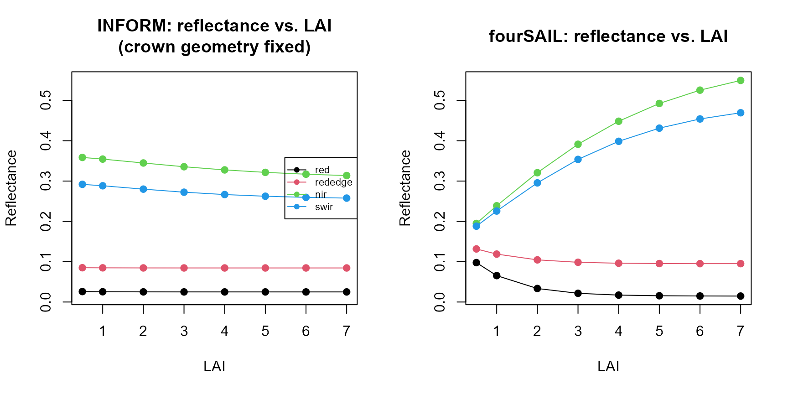
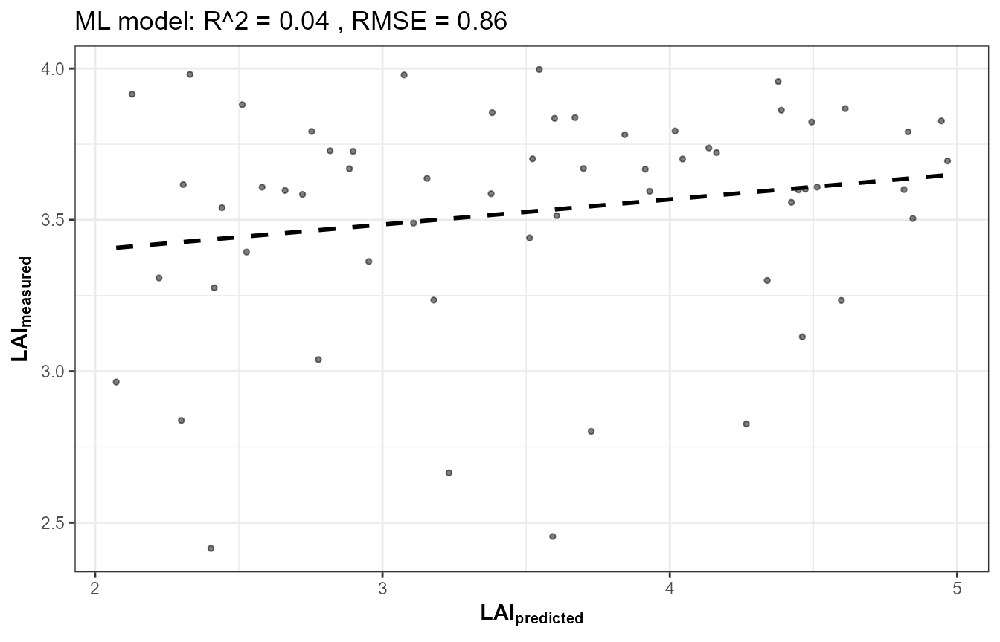
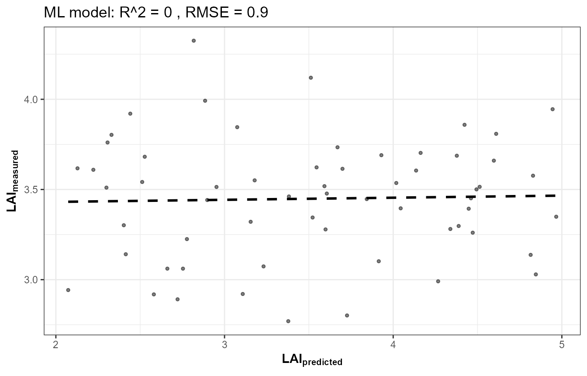
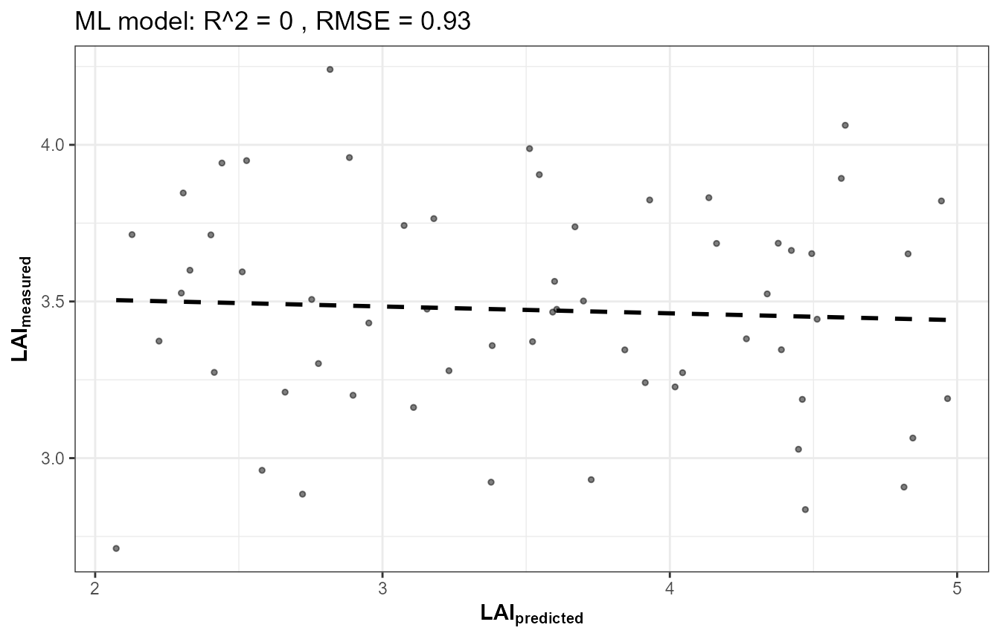
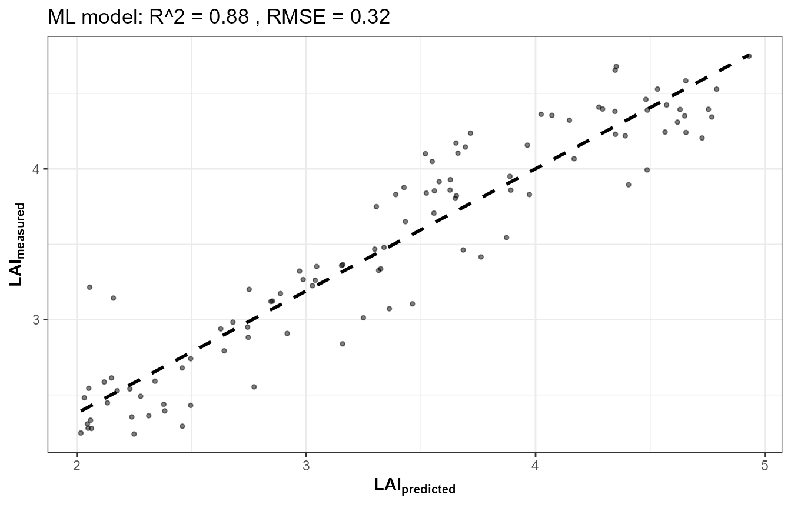
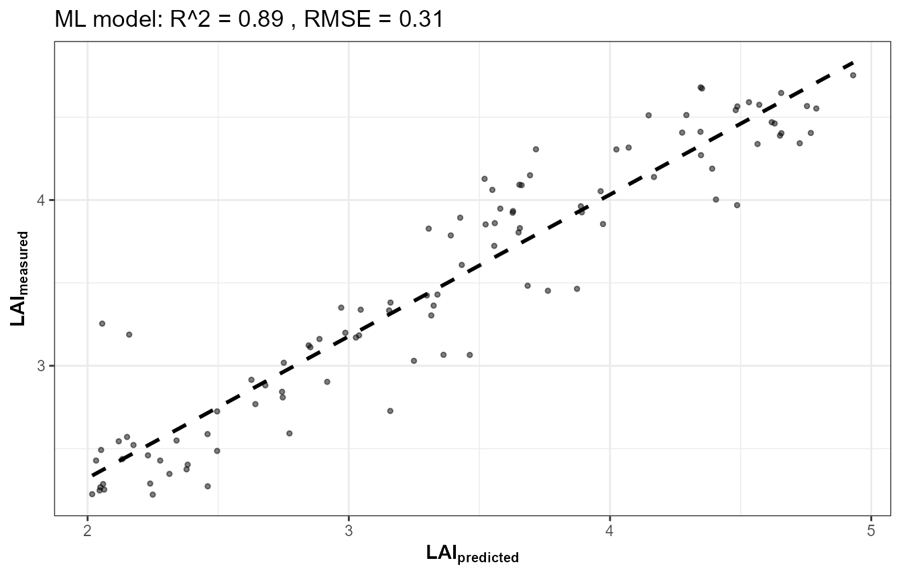
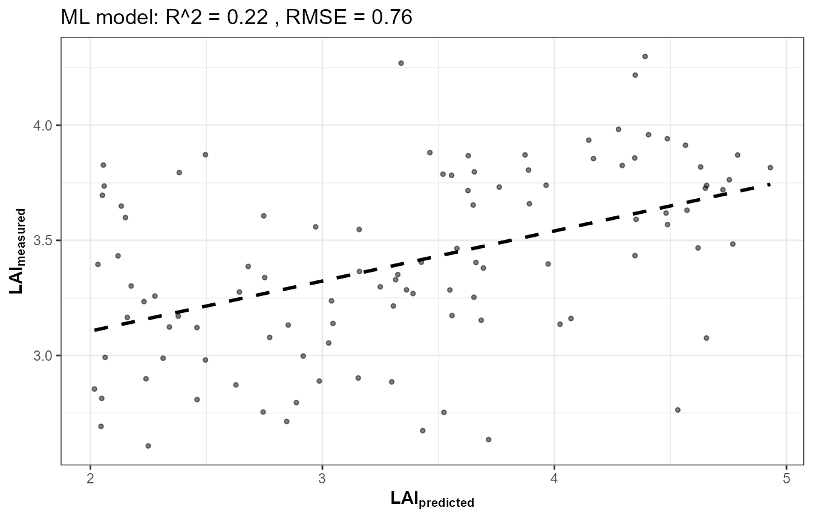
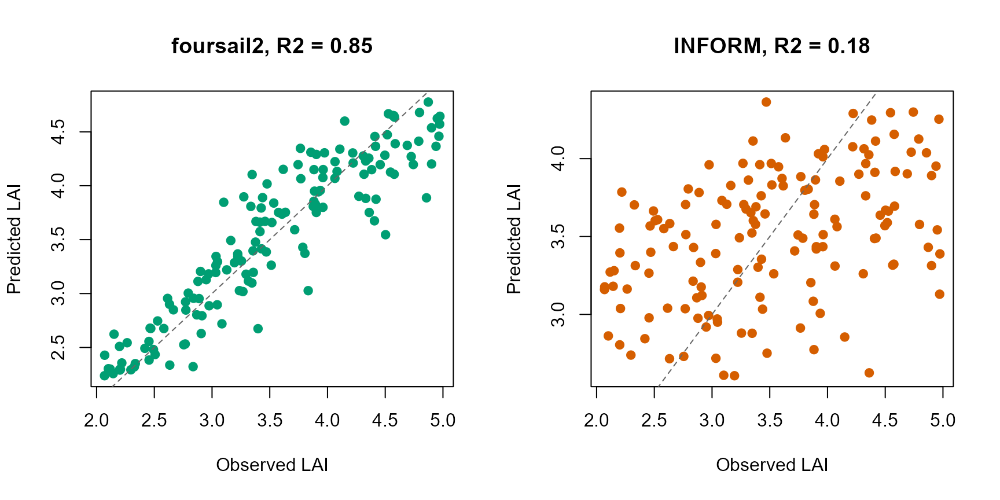

14. End-to-End RTM Inversion Pipeline
t14-end-to-end-pipeline.RmdTutorials 05-12 built the pipeline one stage at a time: LUT, parallel
simulation, sensor convolution, indices, sensitivity, and three flavours
of inversion. This page runs the whole chain as one coherent
pipeline – the same shape as this package’s own course scripts
(Scripts/R/ForPROSAIL/, ForFoursail2/,
ForINFORM/, ForSPART/,
ForMARMIT/) – and, more importantly, shows how the
same pipeline looks across different canopy models with only a
couple of lines changed.
getLUT()
|
v
simulate_RTM() (fourSAIL / foursail2 / INFORM)
|
v
get.spectra.convolved() (Sentinel-2A / 2B / PRISMA)
|
v
getIndices() / getIndicesSE2()
|
v
get.inversion()
|
v
Vegetation traits1. One function, three canopy models
simulate_RTM() dispatches to
foursail()/foursail2()/inform()
based on canopy.model – canopy.model is a
single variable, not a separate script per model:
run_pipeline <- function(canopy.model, leaf.model = "PROSPECT-D", n.samples = 500, seed = 1) {
LUT <- as.data.frame(getLUT(inputs = ToolsRTM::inputsPROSAIL, nLUT = n.samples, setseed = seed))
LUT$Cs <- 0; LUT$fqe <- 0.01; LUT$Cx <- 0
LUT$cell.d <- 40; LUT$inter.c <- 0.045; LUT$baseline.abs <- 0.0006
LUT$leaf.thick <- 1.6; LUT$albino.abs <- 0; LUT$lign.cell <- 2; LUT$Nitrogen <- 1
LUT$fraction_brown <- 0.1; LUT$diss <- 0.5; LUT$Cv <- 1; LUT$Zeta <- 0
LUT$LAIu <- 0.5; LUT$sd <- 650; LUT$cd <- 4.5; LUT$h <- 20; LUT$skyl <- 0.1
rsoil <- rep(0.15, 2101)
# 500 simulations per canopy model, x3 models -- parallelized the same way
# as Tutorial 06, rather than a plain sapply(), to keep this vignette's
# build time reasonable at this sample size.
no_cores <- max(1, parallel::detectCores() - 2)
cl <- makeCluster(no_cores)
registerDoParallel(cl)
refl_list <- foreach(i = seq_len(n.samples), .packages = "ToolsRTM") %dopar% {
suppressMessages(simulate_RTM(inputLUT = LUT[i, ], rsoil = rsoil,
leaf.model = leaf.model, canopy.model = canopy.model))$rsot
}
stopCluster(cl)
refl <- do.call(rbind, refl_list)
colnames(refl) <- paste0("R.", 400:2500)
refl_X <- as.data.frame(refl); colnames(refl_X) <- paste0("X", 400:2500); refl_X <- cbind(id = seq_len(n.samples), refl_X)
se2a <- suppressMessages(get.spectra.convolved(rfl = refl_X, sensor = "Sentinel2a", plot.spectra = FALSE))
band_names <- paste0("B", seq_along(as.numeric(names(se2a)[-1])))
names(se2a) <- c("id", band_names)
train_idx <- sample(seq_len(n.samples), size = round(0.7 * n.samples))
train_df <- cbind(LUT[train_idx, ], se2a[train_idx, band_names])
test_df <- cbind(LUT[-train_idx, ], se2a[-train_idx, band_names])
fit <- get.inversion(data = train_df, depVar = "LAI", inputs = band_names,
algorithm = "RF", n.samples = nrow(train_df), seed = 42)
pred <- as.numeric(predict(fit$model, newdata = test_df[, c("LAI", band_names)]))
r2 <- 1 - sum((test_df$LAI - pred)^2) / sum((test_df$LAI - mean(test_df$LAI))^2)
list(LUT = LUT, refl = refl, obs = test_df$LAI, pred = pred, r2 = r2)
}2. Before inverting: is INFORM’s own forward model even LAI-sensitive here?
Before running any inversion, check the physics first – same rigor as
Tutorial 10’s spectral sensitivity analysis. Vary only LAI,
hold every crown-geometry parameter
(sd/cd/h/LAIu – stem
density, crown diameter, tree height, understory LAI) at this package’s
documented typical stand values, and look at reflectance at four
representative bands:
base_row <- as.data.frame(getLUT(inputs = ToolsRTM::inputsPROSAIL, nLUT = 1, setseed = 1))
base_row$Cs <- 0; base_row$fqe <- 0.01; base_row$Cx <- 0
base_row$cell.d <- 40; base_row$inter.c <- 0.045; base_row$baseline.abs <- 0.0006
base_row$leaf.thick <- 1.6; base_row$albino.abs <- 0; base_row$lign.cell <- 2; base_row$Nitrogen <- 1
base_row$fraction_brown <- 0.1; base_row$diss <- 0.5; base_row$Cv <- 1; base_row$Zeta <- 0
base_row$LAIu <- 0.5; base_row$sd <- 650; base_row$cd <- 4.5; base_row$h <- 20; base_row$skyl <- 0.1
rsoil <- rep(0.15, 2101)
lai_seq <- c(0.5, 1, 2, 3, 4, 5, 6, 7)
bands <- c(red = 665, rededge = 705, nir = 800, swir = 1650)
sens_inform <- sapply(lai_seq, function(lai) {
r <- base_row; r$LAI <- lai
suppressMessages(inform(inputLUT = r, rsoil = rsoil, LeafModel = "PROSPECT-D"))[bands - 400 + 1]
})
sens_foursail <- sapply(lai_seq, function(lai) {
r <- base_row; r$LAI <- lai
foursail(inputLUT = r, rsoil = rsoil, LeafModel = "PROSPECT-D")$rsot[bands - 400 + 1]
})
rownames(sens_inform) <- rownames(sens_foursail) <- names(bands)
op <- par(mfrow = c(1, 2))
matplot(lai_seq, t(sens_inform), type = "o", pch = 19, lty = 1, col = 1:4,
xlab = "LAI", ylab = "Reflectance", main = "INFORM: reflectance vs. LAI\n(crown geometry fixed)",
ylim = range(sens_inform, sens_foursail))
legend("right", rownames(sens_inform), col = 1:4, pch = 19, lty = 1, cex = 0.7)
matplot(lai_seq, t(sens_foursail), type = "o", pch = 19, lty = 1, col = 1:4,
xlab = "LAI", ylab = "Reflectance", main = "fourSAIL: reflectance vs. LAI",
ylim = range(sens_inform, sens_foursail))
par(op)
cat("INFORM range (max-min) across LAI 0.5-7:\n")
#> INFORM range (max-min) across LAI 0.5-7:
print(round(apply(sens_inform, 1, function(x) max(x) - min(x)), 4))
#> red rededge nir swir
#> 0.0009 0.0006 0.0449 0.0342
cat("fourSAIL range (max-min) across LAI 0.5-7:\n")
#> fourSAIL range (max-min) across LAI 0.5-7:
print(round(apply(sens_foursail, 1, function(x) max(x) - min(x)), 4))
#> red rededge nir swir
#> 0.0830 0.0365 0.3548 0.2813That’s the real, verified starting point: under this
fixed-geometry parameterization, INFORM’s own forward-simulated
reflectance is far less sensitive to LAI than fourSAIL’s is –
red and rededge are nearly flat across the
whole LAI range (INFORM’s total swing is roughly 1/20th to 1/40th of
fourSAIL’s at those bands), and even nir/swir
move noticeably less. This isn’t an inversion-algorithm artifact; it’s
visible directly in the forward simulations, before any ML model is
involved. Forest canopy reflectance in INFORM is a function of
both LAI and crown geometry together (via its
gap-fraction/hotspot terms, get.SCOPE-style stand-structure
formulation); with geometry pinned at one fixed value, LAI alone has
comparatively little room left to move the signal.
3. Does letting crown geometry vary help, or hurt?
The natural next question: if fixed geometry caps how much LAI alone
can influence the signal, does allowing
sd/cd/h/LAIu to vary
across the LUT (closer to how a real forest actually varies) improve LAI
retrieval – or does it just add more ways for different parameter
combinations to produce the same reflectance (equifinality)? Three
progressively more complex LUTs, 300 rows each, same RF inversion setup
as Section 2 above:
n.samples <- 300
run_case <- function(vary_geom = FALSE, vary_extra = FALSE, seed = 1) {
LUT <- as.data.frame(getLUT(inputs = ToolsRTM::inputsPROSAIL, nLUT = n.samples, setseed = seed))
LUT$Cs <- 0; LUT$fqe <- 0.01; LUT$Cx <- 0
LUT$cell.d <- 40; LUT$inter.c <- 0.045; LUT$baseline.abs <- 0.0006
LUT$leaf.thick <- 1.6; LUT$albino.abs <- 0; LUT$lign.cell <- 2; LUT$Nitrogen <- 1
LUT$fraction_brown <- 0.1; LUT$diss <- 0.5; LUT$Cv <- 1; LUT$Zeta <- 0
LUT$LAIu <- 0.5; LUT$sd <- 650; LUT$cd <- 4.5; LUT$h <- 20; LUT$skyl <- 0.1
set.seed(seed + 100)
if (vary_geom) {
LUT$sd <- runif(n.samples, 200, 1000); LUT$cd <- runif(n.samples, 2, 7)
LUT$h <- runif(n.samples, 8, 25); LUT$LAIu <- runif(n.samples, 0, 0.8)
}
if (vary_extra) {
LUT$Car <- runif(n.samples, 4, 15); LUT$Anth <- runif(n.samples, 0, 2); LUT$Cbrown <- runif(n.samples, 0, 0.3)
}
refl <- t(sapply(seq_len(n.samples), function(i) {
suppressMessages(inform(inputLUT = LUT[i, ], rsoil = rsoil, LeafModel = "PROSPECT-D"))
}))
refl_X <- as.data.frame(refl); colnames(refl_X) <- paste0("X", 400:2500); refl_X <- cbind(id = seq_len(n.samples), refl_X)
se2a <- suppressMessages(get.spectra.convolved(rfl = refl_X, sensor = "Sentinel2a", plot.spectra = FALSE))
band_names <- paste0("B", seq_along(as.numeric(names(se2a)[-1])))
names(se2a) <- c("id", band_names)
set.seed(seed)
train_idx <- sample(seq_len(n.samples), size = round(0.7 * n.samples))
train_df <- cbind(LUT[train_idx, ], se2a[train_idx, band_names])
test_df <- cbind(LUT[-train_idx, ], se2a[-train_idx, band_names])
fit <- get.inversion(data = train_df, depVar = "LAI", inputs = band_names,
algorithm = "RF", n.samples = nrow(train_df), seed = 42)
pred <- as.numeric(predict(fit$model, newdata = test_df[, c("LAI", band_names)]))
1 - sum((test_df$LAI - pred)^2) / sum((test_df$LAI - mean(test_df$LAI))^2)
}
r2_a <- run_case(vary_geom = FALSE, vary_extra = FALSE) # A: LAI varies, structure fixed
r2_b <- run_case(vary_geom = TRUE, vary_extra = FALSE) # B: LAI + crown geometry vary
r2_c <- run_case(vary_geom = TRUE, vary_extra = TRUE) # C: B + understory/leaf params vary
data.frame(
case = c("A: LAI varies, geometry fixed", "B: LAI + crown geometry vary", "C: B + understory/leaf vary"),
LAI_R2 = round(c(r2_a, r2_b, r2_c), 3)
) |> knitr::kable()| case | LAI_R2 |
|---|---|
| A: LAI varies, geometry fixed | 0.154 |
| B: LAI + crown geometry vary | -0.045 |
| C: B + understory/leaf vary | 0.034 |
The answer is unambiguous: letting crown geometry vary makes
LAI retrieval worse, not better (R² drops from A to
B), and adding further understory/leaf variability on top (C) doesn’t
recover it either. This is equifinality in action: once
sd/cd/h/LAIu are
free to vary too, many different (LAI, geometry) combinations produce
similar reflectance, and the RF model has no way to disentangle which
one actually happened. Fixing crown geometry isn’t the cause of
INFORM’s weaker LAI retrieval – if anything, it’s the setting
where retrieval is least bad, by isolating the one real effect
(Section 2) that INFORM’s own physics does show. The full explanation
has two real parts: INFORM’s forward reflectance is objectively less
LAI-sensitive than fourSAIL/foursail2’s under this parameterization
(Section 2), and whatever weak signal LAI does have gets further diluted
the moment realistic structural variability is allowed (this section) –
more structural representation, more parameter interaction, not “INFORM
is worse.”
4. Why is LAI retrieval weaker with INFORM in this experiment?
set.seed(1)
res_foursail <- run_pipeline("fourSAIL")
set.seed(1)
res_foursail2 <- run_pipeline("foursail2")
set.seed(1)
res_inform <- run_pipeline("INFORM")
results <- data.frame(
canopy_model = c("fourSAIL", "foursail2", "INFORM"),
LAI_R2 = c(res_foursail$r2, res_foursail2$r2, res_inform$r2)
)
knitr::kable(results, digits = 3)| canopy_model | LAI_R2 |
|---|---|
| fourSAIL | 0.829 |
| foursail2 | 0.845 |
| INFORM | 0.177 |
op <- par(mfrow = c(1, 2))
plot(res_foursail2$obs, res_foursail2$pred, pch = 19, col = "#009E73",
xlab = "Observed LAI", ylab = "Predicted LAI", main = paste("foursail2, R2 =", round(res_foursail2$r2, 2)))
abline(0, 1, lty = 2, col = "grey40")
plot(res_inform$obs, res_inform$pred, pch = 19, col = "#D55E00",
xlab = "Observed LAI", ylab = "Predicted LAI", main = paste("INFORM, R2 =", round(res_inform$r2, 2)))
abline(0, 1, lty = 2, col = "grey40")
par(op)Under the LUT configuration used in this example, LAI retrieval with INFORM is substantially weaker than with fourSAIL and foursail2. This result is specific to the parameterization and inversion experiment used here and should not be interpreted as a general limitation of INFORM. Sections 2-3’s sensitivity experiments show how LAI interacts with crown geometry, understory/background, and other structural parameters, illustrating the importance of parameter identifiability and equifinality when moving from homogeneous-canopy models (fourSAIL/foursail2) to forest RTMs with explicit crown structure (INFORM). A real forest-inversion study would need either a much larger LUT specifically designed to break these parameter correlations, prior constraints on crown geometry from independent data (e.g. LiDAR-derived stand structure), or accepting wider uncertainty on LAI specifically when using a structurally richer model like INFORM.
3. SPART: structurally different, same downstream pipeline
SPART() (Tutorial 03) already outputs at sensor bands
directly – there is no separate “simulate native, then convolve” step,
so its own version of this pipeline runs SPART() once per
LUT row instead of simulate_RTM() +
get.spectra.convolved(), then feeds the result into the
exact same get.inversion() call:
# ForSPART/1-simulate_LUT.R's version of this pipeline, conceptually:
sim_i <- SPART(inputLUT = LUT[i, ], CanopyModel = "fourSAIL", LeafModel = "PROSPECT-PRO",
sensor.i = ToolsRTM::Sentinel2A.MSI, rsoil = NULL, get.plots = FALSE)
toc_i <- sim_i$output$rfl.toc.BRDF # already at Sentinel-2A bands -- no convolution step needed4. MARMIT: the odd one out, on purpose
ForMARMIT in this package’s course scripts has no leaf
or canopy model at all – no
Cab/LAI/EWT to invert. Its target
trait is SMC (gravimetric soil moisture, via
get.marmit.rsoil()’s own physics), and it inverts almost
perfectly (R² typically 0.9+) since soil reflectance’s response to
moisture is close to deterministic physics, unlike the noisier proxy
relationship trait retrieval from canopy reflectance usually involves.
Not run here (see Tutorial 03’s soil-contribution section and the
marmit-soil-in-canopy article for the underlying MARMIT
physics).